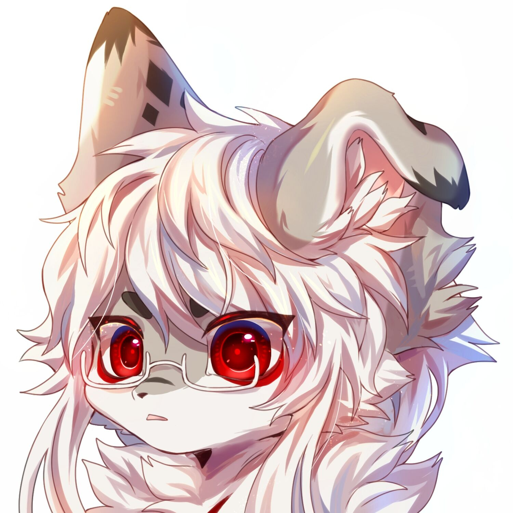
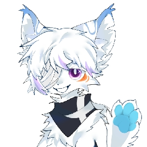
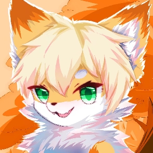

| 名字 | UID | 辞世时间 | 辞世原因 | 生平简介 | 账号状态 | 编号 | 备注 | 头像 | 日常爆肝的Momo | 4436092 | 2021年12月20日晚上 | 自尽 | 兽圈爱好者，人称momo(杨先生)，1月16号是他的生日，常年出现于各种漫展之中，有时会弄一些有关兽圈的视频和绘画整活，对待朋友乐善好施，常接济或帮助他人。2021年12月19日成为了他在B站的最后一次直播，根据其遗愿，Momo的兽装给了他的CP | ~(无人使用) | 《UP主纪念馆名录》233号 |  | 何野Ge | 454123669 | 2020年10月（最后一个稿件在2020年10月5日） | 抑郁症(跳楼) | 兽圈爱好者，她经常制作兽圈动漫视频 | 不详 | 《纪念帐号收录统计表一期》163号 | 存疑；账号现由亲人继承 | 长夜予我_ | 96263816 | 2021年3月16日 | 自缢 | 兽圈画师，曾为圈友设计过头像 | 不详 | 《UP主纪念馆名录》253号 |
|
一只逐梦汪 | 425543848 | 2021年7月14日凌晨 | 自杀 | 生前研究国家机密，曾拯救过7位绝症患者 | 不详 | 《UP主纪念馆名录》283号 |  | 无所事事还逸枫 | 231929251 | 2022年4月7日早上6点（年仅16岁） | 疾病（非霍奇金淋巴瘤+白血病） | 男，兽圈爱好者，入圈两年多，梦想是开一家咖啡店。后期经历肿瘤+白血病，经历多次化疗，非常乐观，积极面对生活，经常扩列新朋友。 【抗癌记录】：2022年1月22日短暂出院，在家修养。1月28日提前回医院，2月2日病情恶化，癌细胞感染到中枢神经，医院诊断为绝症，无法继续治疗。2月13日病情加重，2月14日准备遗体捐赠，在离开后帮助其他人，2月25日病情再次加重，3月7日再次加重，3月9日再次加重（病毒性脑膜炎），3月13日在医院进行了兽装全装开箱，3月17日在医院的支持下举行了16岁生日，4月病情不断恶化，并于7日离世，并进行了遗体捐赠。 | 账号由@紫枫MurasakiBat保管 | 《UP主纪念馆名录》300号 | 信息来源于@紫枫MurasakiBat（兽装由毛茸茸纪念馆保管，将定期出毛并保管。） |  |
B站UP主纪念馆（兽圈站@毛毛驿站）(QQ:884599544)
当一颗星星陨落，必当将有一条生命逝去，晚安...